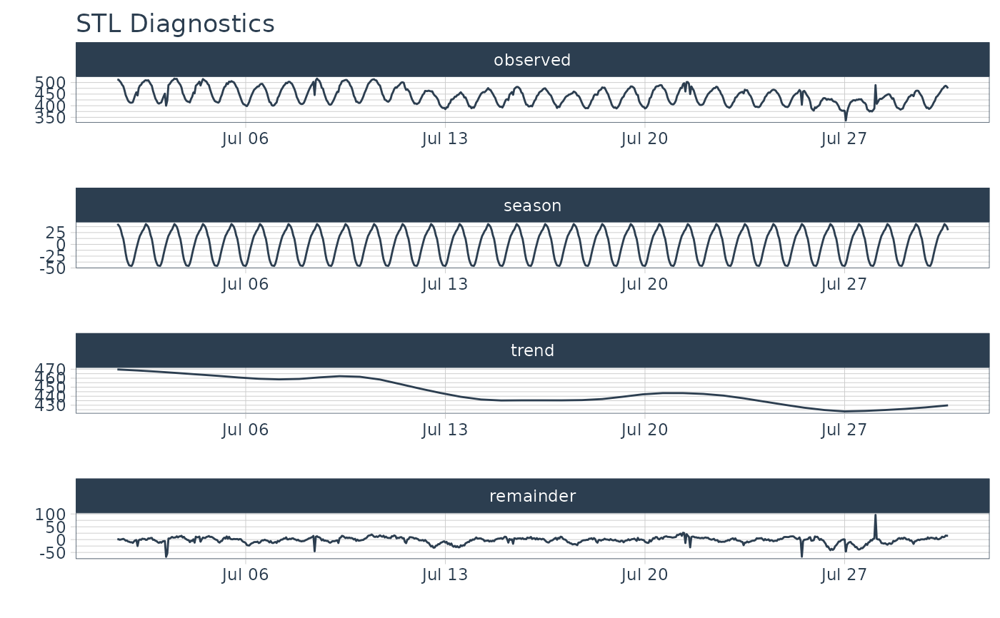
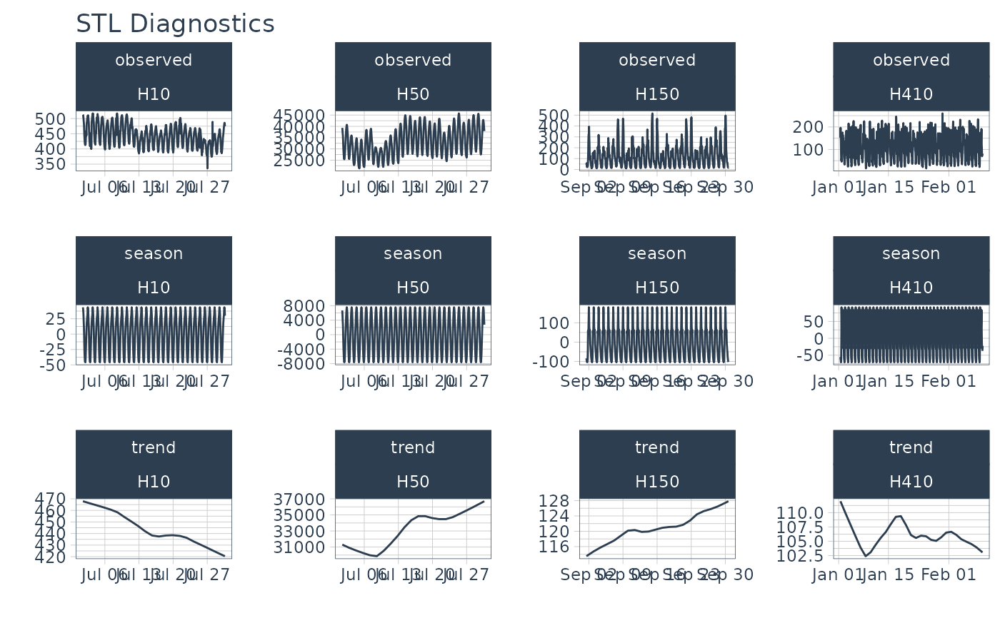

R/plot-stl_diagnostics.R
plot_stl_diagnostics.RdAn interactive and scalable function for visualizing time series STL Decomposition.
Plots are available in interactive plotly (default) and static ggplot2 format.
plot_stl_diagnostics( .data, .date_var, .value, .facet_vars = NULL, .feature_set = c("observed", "season", "trend", "remainder", "seasadj"), .frequency = "auto", .trend = "auto", .message = TRUE, .facet_scales = "free", .line_color = "#2c3e50", .line_size = 0.5, .line_type = 1, .line_alpha = 1, .title = "STL Diagnostics", .x_lab = "", .y_lab = "", .interactive = TRUE )
| .data | A |
|---|---|
| .date_var | A column containing either date or date-time values |
| .value | A column containing numeric values |
| .facet_vars | One or more grouping columns that broken out into |
| .feature_set | The STL decompositions to visualize. Select one or more of "observed", "season", "trend", "remainder", "seasadj". |
| .frequency | Controls the seasonal adjustment (removal of seasonality).
Input can be either "auto", a time-based definition (e.g. "2 weeks"),
or a numeric number of observations per frequency (e.g. 10).
Refer to |
| .trend | Controls the trend component. For STL, trend controls the sensitivity of the lowess smoother, which is used to remove the remainder. |
| .message | A boolean. If |
| .facet_scales | Control facet x & y-axis ranges. Options include "fixed", "free", "free_y", "free_x" |
| .line_color | Line color. |
| .line_size | Line size. |
| .line_type | Line type. |
| .line_alpha | Line alpha (opacity). Range: (0, 1). |
| .title | Plot title. |
| .x_lab | Plot x-axis label |
| .y_lab | Plot y-axis label |
| .interactive | If TRUE, returns a |
A plotly or ggplot2 visualization
The plot_stl_diagnostics() function generates a Seasonal-Trend-Loess decomposition.
The function is "tidy" in the sense that it works
on data frames and is designed to work with dplyr groups.
STL method:
The STL method implements time series decomposition using
the underlying stats::stl(). The decomposition separates the
"season" and "trend" components from
the "observed" values leaving the "remainder".
Frequency & Trend Selection
The user can control two parameters: .frequency and .trend.
The .frequency parameter adjusts the "season" component that is removed
from the "observed" values.
The .trend parameter adjusts the
trend window (t.window parameter from stl()) that is used.
The user may supply both .frequency
and .trend as time-based durations (e.g. "6 weeks") or numeric values
(e.g. 180) or "auto", which automatically selects the frequency and/or trend
based on the scale of the time series.
library(tidyverse) library(timetk) # ---- SINGLE TIME SERIES DECOMPOSITION ---- m4_hourly %>% filter(id == "H10") %>% plot_stl_diagnostics( date, value, # Set features to return, desired frequency and trend .feature_set = c("observed", "season", "trend", "remainder"), .frequency = "24 hours", .trend = "1 week", .interactive = FALSE)#>#># ---- GROUPS ---- m4_hourly %>% group_by(id) %>% plot_stl_diagnostics( date, value, .feature_set = c("observed", "season", "trend"), .interactive = FALSE)#>#>#>#>#>#>#>#>